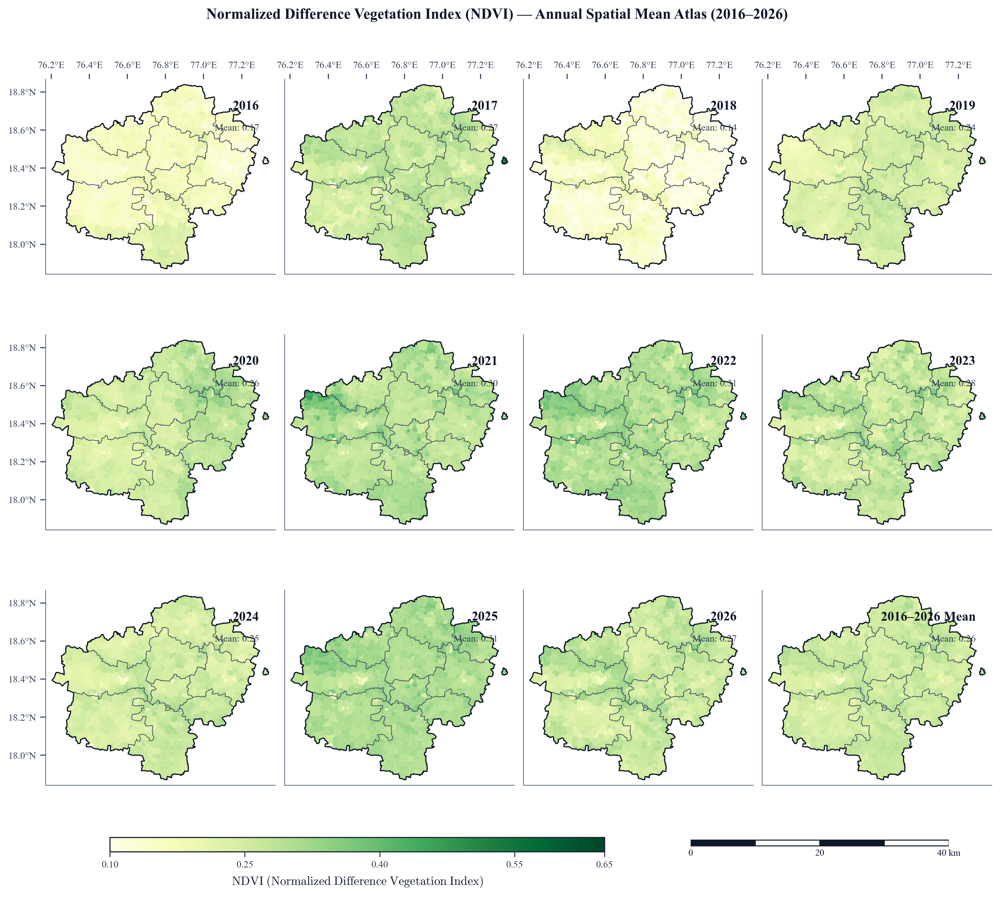
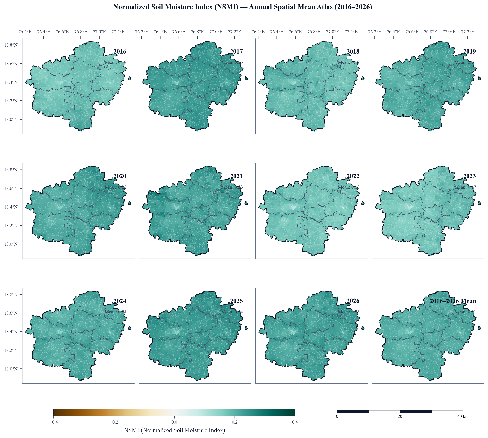
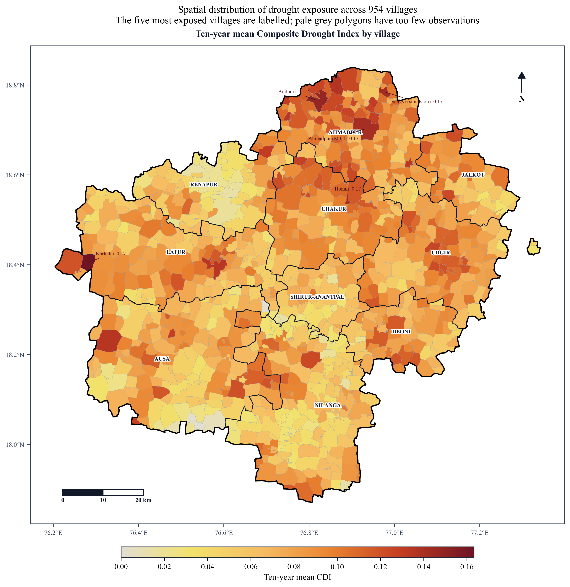
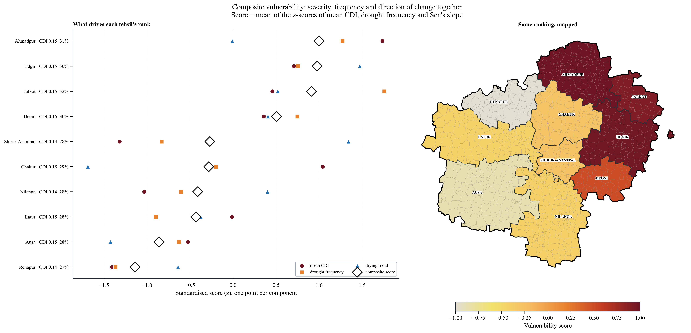
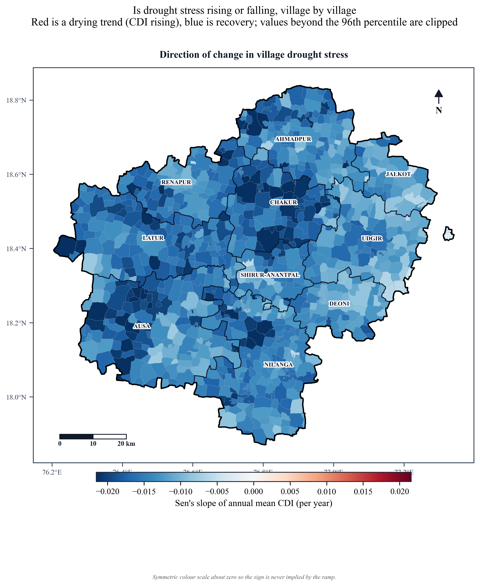
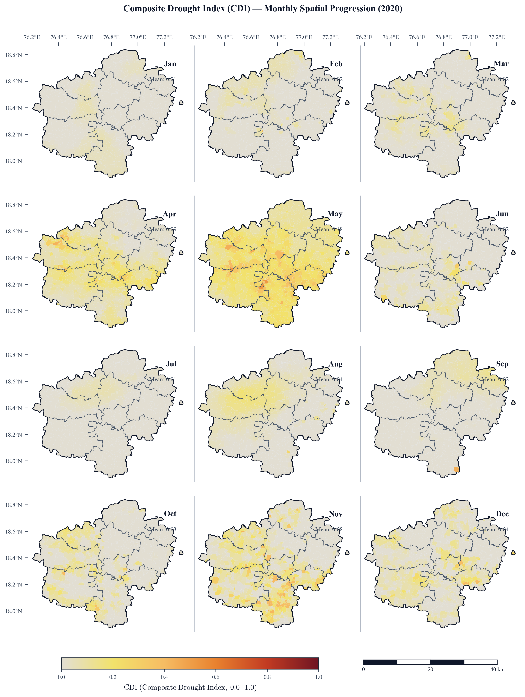
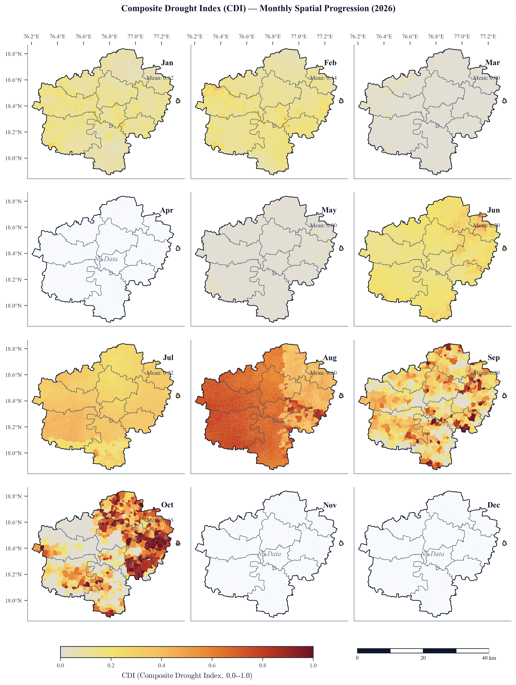

Cartographic Atlas of 954 Villages¶
The Cartographic Atlas provides publication-grade, village-level spatial visualizations conforming strictly to peer-reviewed remote sensing journal standards.
1. Cartographic Design Specifications¶
To ensure scientific rigor and publication readiness:
+---------------------------------------------------------------------------------------------------------+
| CARTOGRAPHIC DESIGN SPECIFICATIONS |
+--------------------------+------------------------------------------------------------------------------+
| Typography | Strict Times New Roman serif throughout (font.family: serif). |
| Text Bounding Boxes | No bounding boxes behind annotations or values (clean, unoccluded map). |
| North Arrow | Single authoritative North arrow in top-right corner (figure fraction). |
| Scale Bar | Authoritative georeferenced scale bar (0 to 40 km) with physical ticks. |
| Village Neatlines | Hairline polygon boundaries (0.05 to 0.08 pt, #CBD5E1). |
| Tehsil Neatlines | Bold administrative boundaries (0.75 pt, #1E293B). |
| Zero-Value Masking | Zero/missing periods rendered with #CBD5E1 ("No Data"); never blank. |
| Colorbar | Shared horizontal colorbar centered at the bottom with physical units. |
+--------------------------+------------------------------------------------------------------------------+
2. Decadal Multi-Year Spatial Mean Atlases (2016–2026)¶
The multi-year atlases arrange all 11 years (2016 to 2026) alongside the 11-year mean baseline in a standardized \(3 \times 4\) panel matrix across all 954 villages:
2.1 Composite Drought Index (CDI) Multi-Year Progression¶

Figure 3.1: 11-Year Annual Mean Composite Drought Index (CDI) Atlas across 954 revenue villages in Latur District (2016–2026). Click image to zoom in full-screen.
2.2 Vegetation Canopy Greenness (NDVI) Decadal Progression¶

Figure 3.2: 11-Year Annual Mean Normalized Difference Vegetation Index (NDVI) across 954 villages. Shows the sharp contrast between drought years (2018) and high-biomass La Niña seasons (2020–2022).
2.3 Synthetic Aperture Radar Root-Zone Soil Moisture (NSMI)¶

Figure 3.3: 11-Year Annual Mean Normalized Soil Moisture Index (NSMI) derived from Sentinel-1 C-band SAR backscatter.
2.4 Seasonal Meteorological Moisture Balance (SPI-3)¶

Figure 3.4: 11-Year Annual Mean 3-Month Standardized Precipitation Index (SPI-3) tracking seasonal rainfall surpluses and deficits.
3. Vulnerability Rankings & Spatial Trend Analysis¶
Evaluating spatial risk and long-term decadal trends across 10 tehsils and 954 villages:
3.1 11-Year Mean Village CDI Map¶

Figure 3.5: Village-level decadal mean Composite Drought Index (CDI) across 954 revenue villages, highlighting chronic moisture deficit zones in southern tehsils.
3.2 Tehsil Composite Vulnerability Ranking¶

Figure 3.6: Integrated tehsil vulnerability ranking derived from multi-factor historical exposure, vegetative sensitivity, and soil moisture memory.
3.3 Decadal Trend Analysis (Sen's Slope Estimator)¶

Figure 3.7: Non-parametric Sen's slope spatial trend showing decadal rate of drought change across all 954 revenue villages.
4. Landmark Historical Case Studies¶
4.1 Peak Emergency of the 2018 Drought (2018 Atlas)¶
In late Kharif 2018, widespread monsoon failure plunged over \(80\%\) of Latur into D2–D4 drought:

Figure 3.8: Complete 12-month cadastral drought progression for 2018 (Crisis Deep Dive), showing rapid escalation into exceptional drought by September 2018.
4.2 Bumper Recovery Under La Niña (2020 Atlas)¶
In 2020, heavy monsoon rainfall restored soil reservoirs and led to record vegetative greening:

Figure 3.9: 12-Month cadastral drought progression for 2020. Over 98% of villages registered None/Normal, demonstrating rapid Vertisol agro-ecological recovery.
4.3 Current Operational Monitoring Horizon (2026 Atlas)¶

Figure 3.10: Latest operational satellite observation atlas for 2026 displaying localized moisture stress in southeastern tehsils.